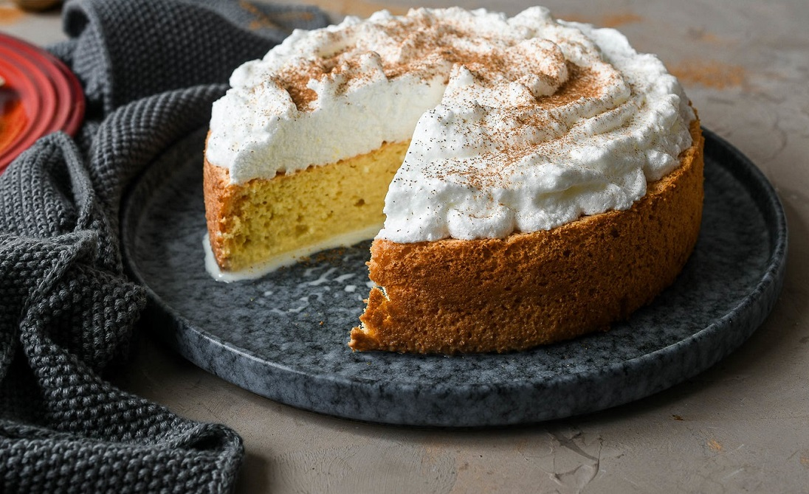

Inicio
Recetas
Ingredientes
Suscribirse!
RECETAS
Reina Pepiada
Una de las arepas más populares de nuestra gastronomia...
Ver más
Pabellon criollo
El pabellón criollo es uno de los platos mas típicos de la cocina venezolana...
Ver más

Torta tres leches
La torta tres leches es uno de los dulces más populares en Venezuela...
Ver más
Ultimas video recetas añadidas